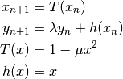

Kaplan-Yorke map¶

{kind=link}
{kind=link}
Python code¶
from railgun import SimObject, relpath
class KaplanYorkeMap(SimObject):
"""
Simulating Kaplan-Yorke Map using RailGun
"""
_clibname_ = 'libkaplan_yorke_map.so' # name of shared library
_clibdir_ = relpath('.', __file__) # library directory
_cmembers_ = [ # declaring members of struct
'num_i', # num_* as size of array (no need to write `int`)
'double xt[i]', # array with num_i elements
'double yt[i]', # array with num_i elements
'double mu',
'double lmd',
]
_cfuncs_ = ["gene_seq()"]
kym = KaplanYorkeMap(num_i=10**5, mu=2, lmd=0.4, xt_0=0.1, yt_0=0.1)
kym.setv()
kym.gene_seq()
(xt, yt) = kym.getv('xt, yt')
import pylab
pylab.figure(1, figsize=(4,3))
pylab.plot(xt, yt, 'k.', markersize=0.1)
pylab.show()
C code¶
typedef struct kaplanyorkemap_{
int num_i;
double *xt;
double *yt;
double mu;
double lmd;
} KaplanYorkeMap;
int KaplanYorkeMap_gene_seq(KaplanYorkeMap *self)
{
int st;
for (st = 1; st < self->num_i; ++st){
self->xt[st] = 1 - self->mu * self->xt[st-1] * self->xt[st-1];
self->yt[st] = self->lmd * self->yt[st-1] + self->xt[st-1];
}
return 0;
}
Definition of the map¶
